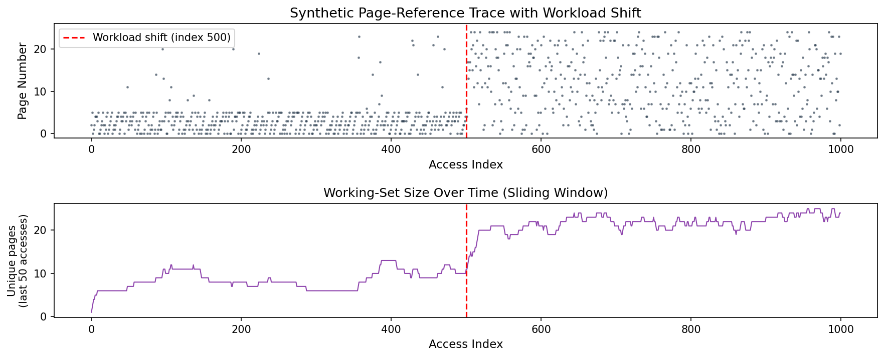
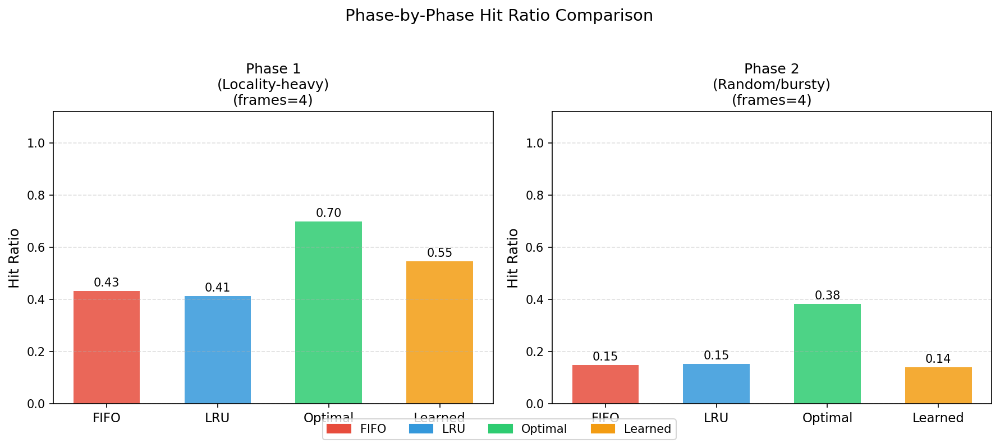

In virtual memory architectures, physical RAM is subdivided into fixed-size frames managed by operating system replacement policies. When a process requests a virtual page absent from memory (a page fault), the OS must select an existing resident page for eviction. Classical heuristics such as First-In, First-Out (FIFO) and Least Recently Used (LRU) rely on static assumptions: FIFO assumes arrival order approximates utility, whereas LRU assumes recency reliably forecasts future demand [Silberschatz et al., 2018].
However, modern production software exhibits non-stationary workloads characterized by sharp phase transitions—such as initialization loops giving way to streaming scans or context-switching between localized routines and bursty memory accesses. While Belady’s Optimal algorithm provides an unreachable upper bound by evicting the page whose next reference occurs furthest in the future [Belady, 1966], offline future omniscience cannot be realized in real operating systems.
This paper studies a learning-augmented page replacement policy. Using a lightweight Decision Tree classifier trained on causal runtime features, we evaluate whether predictive models can outshine classical policies under local stability, and critically analyze what happens to both classical heuristics and the learned policy when the workload undergoes a severe distributional shift partway through execution.
All replacement algorithms and simulation logic were designed and constructed from scratch in pure Python:
DecisionTreeClassifier(max_depth=4, min_samples_leaf=5) trained exclusively on Phase 1 access behavior. At each eviction juncture, the model evaluates candidate resident pages using three causal features computed strictly from past history:
predict_proba, evicting the candidate with the highest predicted probability of matching Belady’s decision.
A reproducible 1,000-reference synthetic workload trace was generated with a fixed random seed (seed=42) across a 25-page address space (pages 0–24). The trace implements a deliberate, sharp workload shift at access index 500:
To prevent future data leakage, the machine learning model was trained strictly on samples collected from Phase 1 under 5 page frames (318 train / 107 test split). All policies were subsequently evaluated on the identical 1,000-page access sequence across 3, 4, 5, and 6 frames.

| Algorithm | Frames | Total Hits | Total Faults | Hit Ratio | Fault Ratio |
|---|---|---|---|---|---|
| FIFO | 3 | 193 | 807 | 0.1930 | 0.8070 |
| FIFO | 4 | 290 | 710 | 0.2900 | 0.7100 |
| FIFO | 5 | 401 | 599 | 0.4010 | 0.5990 |
| FIFO | 6 | 491 | 509 | 0.4910 | 0.5090 |
| LRU | 3 | 190 | 810 | 0.1900 | 0.8100 |
| LRU | 4 | 282 | 718 | 0.2820 | 0.7180 |
| LRU | 5 | 388 | 612 | 0.3880 | 0.6120 |
| LRU | 6 | 524 | 476 | 0.5240 | 0.4760 |
| Optimal | 3 | 421 | 579 | 0.4210 | 0.5790 |
| Optimal | 4 | 540 | 460 | 0.5400 | 0.4600 |
| Optimal | 5 | 632 | 368 | 0.6320 | 0.3680 |
| Optimal | 6 | 704 | 296 | 0.7040 | 0.2960 |
| Learned | 3 | 243 | 757 | 0.2430 | 0.7570 |
| Learned | 4 | 343 | 657 | 0.3430 | 0.6570 |
| Learned | 5 | 461 | 539 | 0.4610 | 0.5390 |
| Learned | 6 | 557 | 443 | 0.5570 | 0.4430 |
| Algorithm | Phase 1 Hits (Locality) | Phase 1 Hit Ratio | Phase 2 Hits (Random) | Phase 2 Hit Ratio | Shift Drop (Δ) |
|---|---|---|---|---|---|
| FIFO | 216 | 0.4320 | 74 | 0.1480 | -0.2840 |
| LRU | 206 | 0.4120 | 76 | 0.1520 | -0.2600 |
| Optimal | 349 | 0.6980 | 191 | 0.3820 | -0.3160 |
| Learned | 273 | 0.5460 | 70 | 0.1400 | -0.4060 |

The empirical results provide key insights into operating systems memory management and learning-augmented heuristics:
1. The Learned Policy Dominates in Phase 1: In Phase 1, the Learned Policy achieved a 0.5460 hit ratio, substantially outperforming both FIFO (0.4320) and LRU (0.4120). By learning non-linear boundary splits over both frequency and recency, the Decision Tree effectively distinguishes between stale background pages and recurring loop members, closing nearly half the gap between LRU and Optimal.
2. Distribution Shift Induces the Heaviest Degradation: As shown in Table 2, every policy suffered an efficiency collapse in Phase 2 because the active working-set size (25 pages) vastly exceeded the 4 available frames (theoretical random expectation ≈ 4/25 = 0.16). Crucially, the Learned Policy degraded the most, plunging by −0.4060 in hit ratio. Because the tree was trained on Phase 1 correlations where high recency indicated obsolescence, it made systematically overconfident errors when access distributions randomized. LRU, being purely heuristic and stateless regarding global distribution, proved marginally more resilient (−0.2600 drop).
3. Optimal's Persistence: Even in purely random workloads (Phase 2), Belady's Optimal sustained a 0.3820 hit ratio. This proves that even without locality, opportunistic lookahead identifies coincidental short-term re-references that blind heuristics cannot capture.
This term paper demonstrates that lightweight learned heuristics can tangibly improve operating systems memory performance when workload distributions remain consistent with training data. However, static learned models are vulnerable to workload shifts. Production deployment of learning-augmented OS kernels must incorporate online drift detection or hybrid fallbacks (e.g., reverting to LRU when prediction confidence decays) to remain robust against non-stationary system dynamics.
[Belady, 1966] Belady, L. A. (1966). A study of replacement algorithms for a virtual-storage computer. IBM Systems Journal, 5(2), 78–101.
[Pedregosa et al., 2011] Pedregosa, F., et al. (2011). Scikit-learn: Machine learning in Python. Journal of Machine Learning Research, 12, 2825–2830.
[Silberschatz et al., 2018] Silberschatz, A., Galvin, P. B., & Gagne, G. (2018). Operating System Concepts (10th ed.). John Wiley & Sons.
[Tanenbaum & Bos, 2015] Tanenbaum, A. S., & Bos, H. (2015). Modern Operating Systems (4th ed.). Pearson.